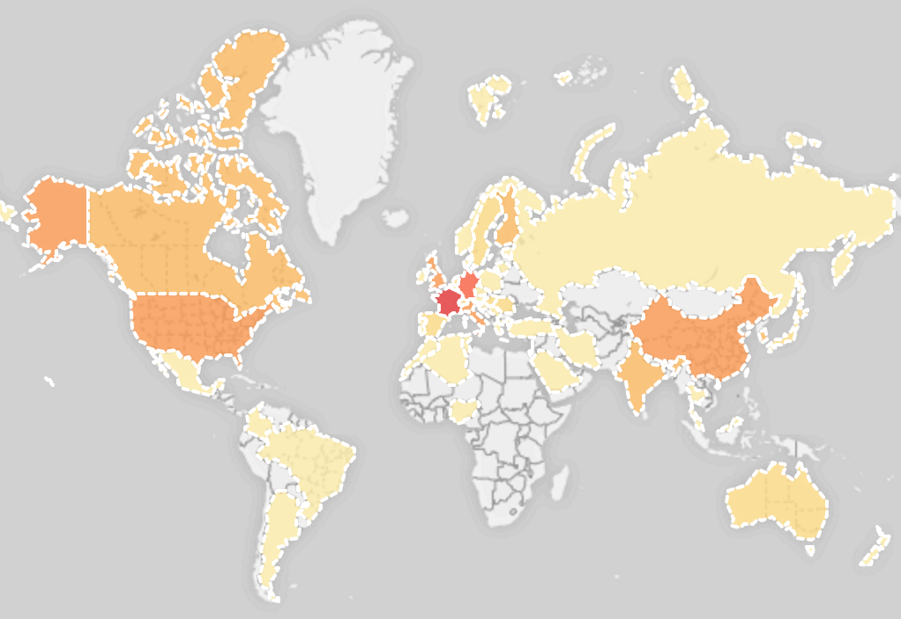
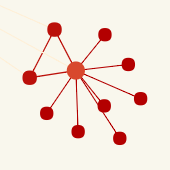

Show the Publication Data in Geographical Context

Keyword Co-Occurrence Network

Welcome to our research database. We collected and processed a large number of publications, in order to retrieve high quality metadata about the research topics below. Once you have selected a database, different tools are available to visualize and analyze the data.
| Property | Figure |
|---|